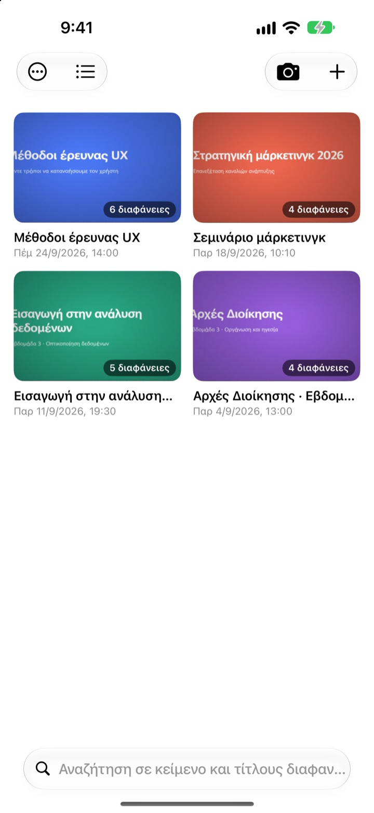
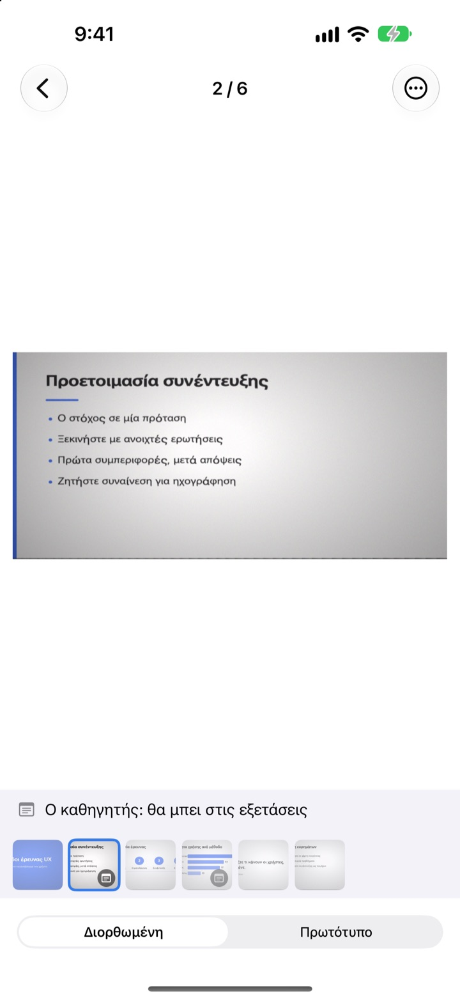
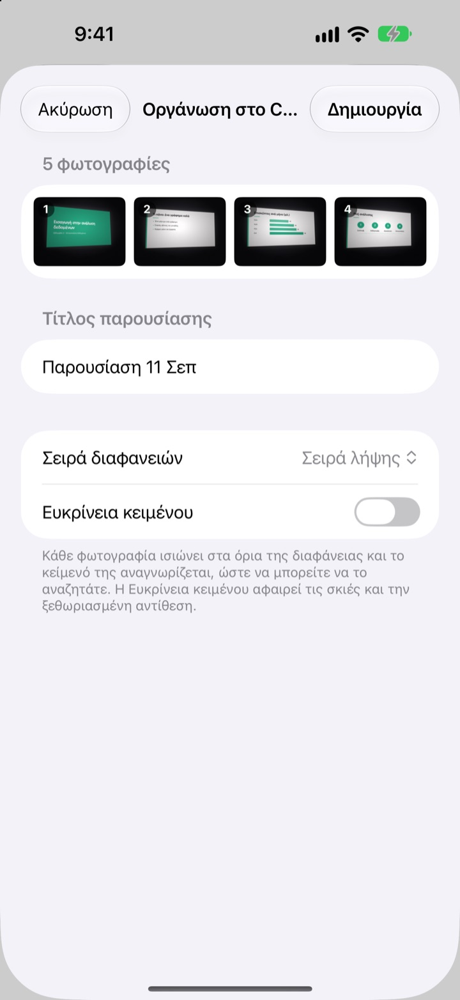
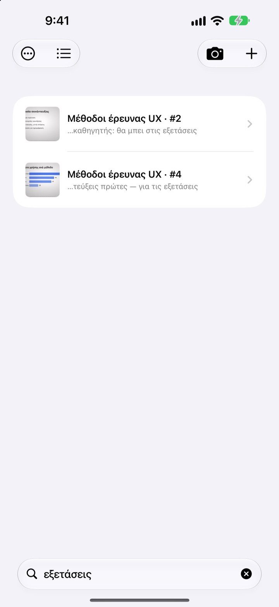

Τραβηγμένη από το πλάι.
Αποθηκευμένη από μπροστά.
Η κάμερα βρίσκει και τις τέσσερις γωνίες της διαφάνειας, την ισιώνει και κόβει ό,τι υπάρχει γύρω της. Οι διαφάνειες που τραβάτε τη μία μετά την άλλη μπαίνουν στην ίδια παρουσίαση.
Μία αγορά, όλες οι λειτουργίες. Χωρίς συνδρομή, χωρίς λογαριασμό.

Ισιώστε τη μόνοι σας
Αυτή η φωτογραφία τραβήχτηκε λοξά από μια πλαϊνή θέση στο αμφιθέατρο. Το πράσινο περίγραμμα δείχνει πού βρέθηκαν οι γωνίες της διαφάνειας.
Ανοίξατε τις φωτογραφίες για διάβασμα και δεν βρίσκατε τη διαφάνεια;
Οι διαφάνειες από τις πίσω σειρές βγαίνουν πάντα στραβές και χάνονται ανάμεσα σε σέλφι και αποδείξεις. Σε ένα ήσυχο αμφιθέατρο, μόνο ο ήχος του κλείστρου αρκεί για να διστάσετε. Το CatchSlide φωτογραφίζει αθόρυβα, ισιώνει κάθε διαφάνεια και τις κρατά μαζί ανά παρουσίαση.
Ίσια από τη στιγμή της λήψης
Η κάμερα παρακολουθεί ζωντανά τις τέσσερις γωνίες της διαφάνειας και γίνεται πράσινη όταν τις εντοπίσει. Ακόμη και λοξά τραβηγμένη, η διαφάνεια ισιώνει σαν να τη βλέπετε από μπροστά, χωρίς το φόντο.
Κανένας ήχος κλείστρου. Ενεργοποιήστε την Αυτόματη λήψη και κάθε νέα διαφάνεια τραβιέται μόνη της, ενώ οι κουνημένες λήψεις παραλείπονται.

Όσες φωτογραφίες έχετε ήδη, μονομιάς
Επιλέξτε αρκετές φωτογραφίες από το μάθημα στις Φωτογραφίες και κοινοποιήστε τις στο CatchSlide. Ισιώνονται και αποθηκεύονται ως μία παρουσίαση, με τη σειρά που τις τραβήξατε.
Η Ευκρίνεια κειμένου αφαιρεί σκιές και θαμπή αντίθεση.

Αρκεί μία λέξη
Το CatchSlide διαβάζει το κείμενο κάθε διαφάνειας απευθείας στη συσκευή σας. Ακόμη και εβδομάδες μετά, μία λέξη σάς φέρνει στη σωστή διαφάνεια.
Και οι σημειώσεις στις διαφάνειες είναι αναζητήσιμες. Γράψτε εξεταστική σε μερικές και όλη η ύλη είναι μία αναζήτηση μακριά.

Ξεκινήστε σε τρία βήματα
- 1
Ανοίξτε την κάμερα
Από το κουμπί στη λίστα, το widget στην οθόνη Αφετηρίας ή την οθόνη κλειδώματος.
- 2
Πλαισιώστε τη διαφάνεια
Όταν οι γωνίες γίνουν πράσινες, πατήστε το κλείστρο ή αφήστε την αυτόματη λήψη.
- 3
Επανάληψη ανά παρουσίαση
Αναζητήστε, προσθέστε σημειώσεις και εξαγάγετε PDF για διάβασμα.
Τι μπορείτε να κάνετε με μια παρουσίαση
- Ηχογράφηση
- Ηχογραφήστε ενώ φωτογραφίζετε και ακούστε κάθε διαφάνεια από τη στιγμή που την τραβήξατε
- Απομαγνητοφώνηση
- Μετατρέπει την ηχογράφηση σε κείμενο, δείχνει τι ειπώθηκε σε κάθε διαφάνεια και μπαίνει στην αναζήτηση
- Σύνοψη με AI
- Συνοψίζει την παρουσίαση από το κείμενο των διαφανειών και την απομαγνητοφώνηση (iOS 26 ή νεότερο σε συσκευές με Apple Intelligence)
- Σημειώσεις επανάληψης με μία, δύο ή τέσσερις διαφάνειες ανά σελίδα
- Markdown
- Ένα .zip έτοιμο για Notion ή Obsidian
- PowerPoint
- Εξαγωγή σε .pptx με την απομαγνητοφώνηση στις σημειώσεις ομιλητή
- Συγχώνευση
- Επιλέξτε αρκετές παρουσιάσεις και ενώστε τες σε μία
- Συγχρονισμός iCloud
- Ενεργοποιήστε τον για να βλέπετε τις παρουσιάσεις σε άλλες συσκευές με το ίδιο Apple ID. Είναι απενεργοποιημένος από προεπιλογή
- Widget
- Ανοίγουν την κάμερα απευθείας από την οθόνη Αφετηρίας ή την οθόνη κλειδώματος
Η αναγνώριση κειμένου, η απομαγνητοφώνηση και οι συνόψεις με AI γίνονται στη συσκευή σας.
Μία αγορά, όλα μέσα
CatchSlide
- Αθόρυβη λήψη, αυτόματη λήψη και ίσιωμα
- Εισαγωγή πολλών φωτογραφιών μαζί από τις Φωτογραφίες
- Διαφάνειες ανά παρουσίαση, αναζήτηση σε κείμενο και σημειώσεις
- Ηχογράφηση, απομαγνητοφώνηση και σύνοψη με AI
- Εξαγωγή σε PDF, Markdown και PowerPoint
- Συγχρονισμός iCloud και widget
Φιλοδώρημα (προαιρετικό)
- Αν η εφαρμογή σάς βοηθά, μπορείτε να αφήσετε ένα μικρό φιλοδώρημα στον δημιουργό
- Το φιλοδώρημα δεν ξεκλειδώνει τίποτα. Όλες οι λειτουργίες δουλεύουν και χωρίς αυτό
Θα το βρείτε στην οθόνη Τα στοιχεία μου.
Χωρίς συνδρομή και χωρίς πληρωμές για επιπλέον λειτουργίες. Δείτε την τιμή για τη χώρα σας στο App Store.
Συχνές ερωτήσεις
Πώς φωτογραφίζω μια διαφάνεια;
Ανοίξτε την κάμερα και πλαισιώστε τη διαφάνεια. Όταν οι γωνίες γίνουν πράσινες, πατήστε το κλείστρο. Με την αυτόματη λήψη ενεργή, η επόμενη διαφάνεια τραβιέται μόνη της κάθε φορά που αλλάζει.
Ακούγεται ήχος κλείστρου;
Όχι. Το καρέ αποθηκεύεται απευθείας από την κάμερα, οπότε η λήψη είναι αθόρυβη σε κάθε χώρα.
Γιατί οι φωτογραφίες μου μπήκαν σε μία παρουσίαση;
Αν τραβήξετε την επόμενη φωτογραφία μέσα σε 5 λεπτά από την προηγούμενη, θεωρείται μέρος της ίδιας παρουσίασης. Πατήστε τον τίτλο στη λίστα για μετονομασία και χρησιμοποιήστε τη Συγχώνευση παρουσιάσεων για να ενώσετε όσες χωρίστηκαν.
Μπορώ να προσθέσω φωτογραφίες που έχω ήδη;
Ναι. Επιλέξτε τις στις Φωτογραφίες και κοινοποιήστε τις στο CatchSlide, ή πατήστε ＋ στη λίστα και επιλέξτε Εισαγωγή από τις Φωτογραφίες. Ισιώνονται και αποθηκεύονται ως μία παρουσίαση με τη σειρά λήψης.
Οι γωνίες εντοπίστηκαν λάθος.
Ανοίξτε τη διαφάνεια, επιλέξτε Προσαρμογή γωνιών από το μενού ⋯ και σύρετε τις τέσσερις γωνίες στη θέση τους. Η Αυτόματη ανίχνευση τις ψάχνει ξανά και η Ολόκληρη εικόνα κρατά όλη τη φωτογραφία. Το πρωτότυπο φυλάσσεται πάντα, οπότε μπορείτε να το ξανακάνετε όποτε θέλετε.
Μπορώ να ψάξω στο κείμενο των διαφανειών;
Γράψτε μια λέξη στο πεδίο αναζήτησης πάνω από τη λίστα. Η αναζήτηση καλύπτει κείμενο διαφανειών, τίτλους, σημειώσεις και απομαγνητοφωνήσεις και σας πηγαίνει κατευθείαν στη διαφάνεια. Η αναγνώριση κειμένου γίνεται στη συσκευή.
Πώς εξάγω PDF;
Μέσα σε μια παρουσίαση ανοίξτε το μενού κοινοποίησης, επιλέξτε Εξαγωγή ως PDF και διαλέξτε μία, δύο ή τέσσερις διαφάνειες ανά σελίδα. Από το φύλλο κοινοποίησης αποθηκεύστε το στα Αρχεία ή στείλτε το σε άλλη εφαρμογή.
Πώς αλλάζω τη σειρά ή διαγράφω διαφάνειες;
Μέσα σε μια παρουσίαση, πατήστε παρατεταμένα μια διαφάνεια και σύρετέ την. Από το ίδιο μενού τη διαγράφετε ή την κοινοποιείτε, και με την Επιλογή διαγράφετε πολλές μαζί.
Πώς λειτουργούν η ηχογράφηση και η σύνοψη με AI;
Ενεργοποιήστε την Ηχογράφηση στο πάνω μέρος της κάμερας και κάθε διαφάνεια κρατά τον ήχο εκείνης της στιγμής. Στις Σημειώσεις παρουσίασης, η Σύνοψη με AI γράφει μια σύνοψη από το κείμενο των διαφανειών και την απομαγνητοφώνηση. Χρειάζεται iOS 26 ή νεότερο σε συσκευή με Apple Intelligence.
Πού αποθηκεύονται οι διαφάνειες και οι ηχογραφήσεις μου;
Στη συσκευή σας. Ανεβαίνουν στο δικό σας iCloud μόνο αν ενεργοποιήσετε τον Συγχρονισμός στην οθόνη Τα στοιχεία μου, και δεν χρειάζεται λογαριασμός. Περισσότερα στην Πολιτική απορρήτου.
Ερωτήσεις, σφάλματα ή ιδέες; Γράψτε στο leeo@kakao.com.